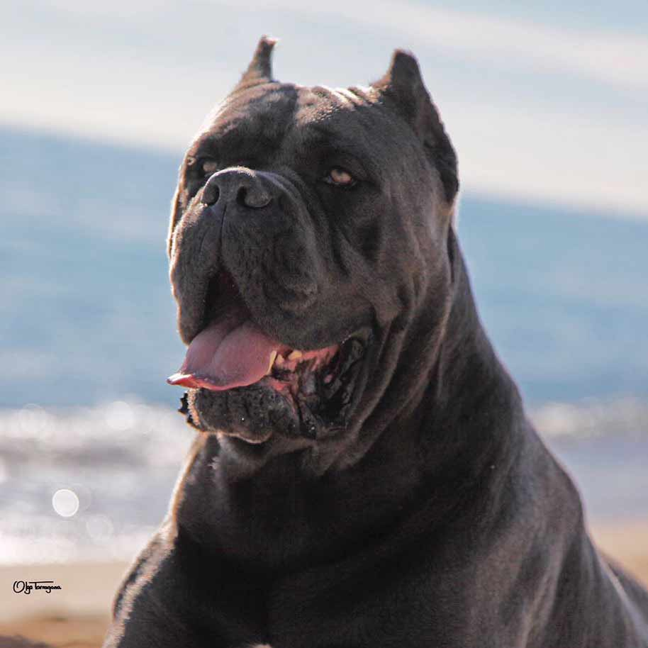
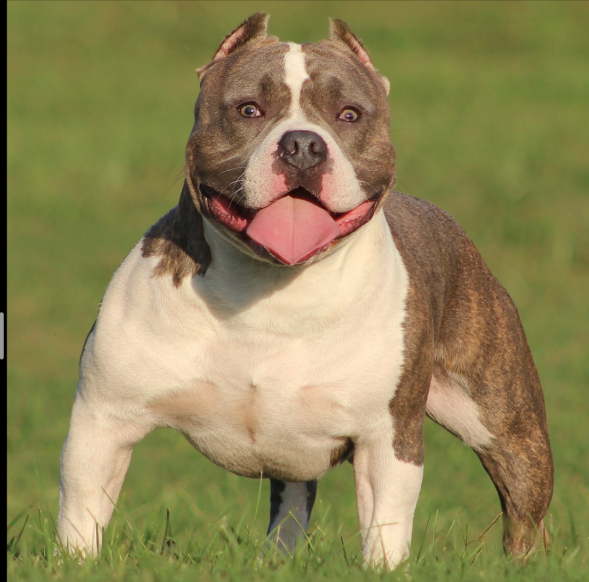
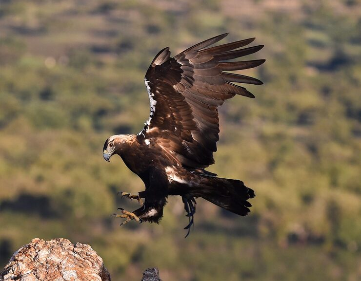
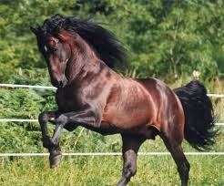
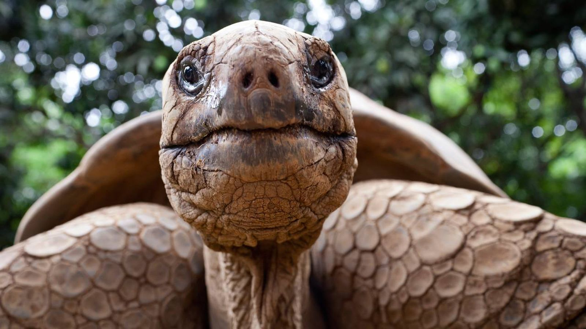

Thor
Cane Corso
A strong, loyal, and well-trained dog. Thor is the guardian of the house and always alert.
My Pets
Each one has its own personality. Let me introduce them.

Cane Corso
A strong, loyal, and well-trained dog. Thor is the guardian of the house and always alert.

Labrador
Playful and intelligent, Hercules is the best companion for outdoor activities.

Pitbull American Bully
Despite his imposing figure, Apolo is extremely affectionate and loves kids.

Harpy Eagle
The queen of the sky. Asis is a natural hunter with an impressive wingspan.

Paso Horse
Elegant and spirited, Zeus is a superior genetics specimen that draws attention at every show.

Galapagos Tortoise
The wisest of the group. Uwey has spent decades accompanying the family with endless calm.